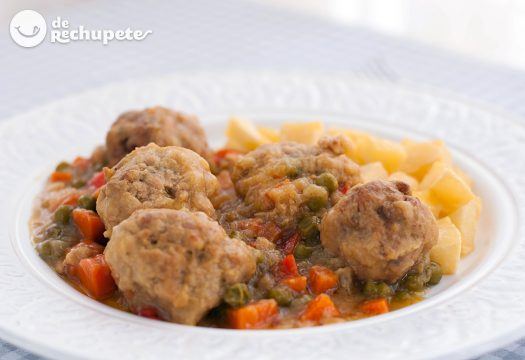

Ingredientes
Para las albóndigas: 750 gr. de carne picada (cerdo, ternera o mixta)
2 huevos medianos
150 gr. de pan de molde sin corteza y 5 cucharadas de leche
1 cucharada de perejil fresco picado y un poco más para espolvorear
2 dientes de ajo
1 cebolla
Sal, nuez moscada y pimienta negra recién molida (al gusto)
Harina para rebozar las albondigas
2 zanahorias
Preparación
1.Preparamos la salsa. Lavamos y picamos en dados muy pequeños la cebolla.
2.Laminamos el diente de ajo en una cacerola baja. Añadimos un chorro de aceite de oliva virgen y ponemos a pochar la cebolla y el ajo.
3.Lavamos y cortamos en trocitos las zanahorias y el pimiento rojo. Cuando la cebolla haya pochado, añadimos el resto de ingredientes y rehogamos. Salpimentamos al gusto.
4.Añadimos una cucharada pequeña de harina a la cazuela y tuesta la harina durante un minuto removiendo bien.
5.Dejamos que los ingredientes suelten todo el líquido. Cuando haya reducido vertemos el vino blanco. Dejamos que se cocinen a fuego muy bajo.
6.Mientras se hace la verdura preparamos la mezcla de las albóndigas.
7.Vamos a hacer las pelotas de carne, que todas salgan más o menos igual.
8.Salpimentamos la carne picada, tanto la de ternera como la de cerdo en un cuenco grande.
9.Rompemos los 2 huevos y los añadimos junto con la nuez moscada, el perejil fresco (o si no tenemos seco), las rebanadas de pan sin la corteza que previamente hemos remojado en leche durante unos minutos. Dejamos que repose la mezcla.
10.Vamos a cocer unos minutos la cebolla y el ajo. De esta forma conseguiremos que la cebolla se reblandezca y que nuestras albóndigas queden con una textura homogénea.

Espero que os guste esta receta